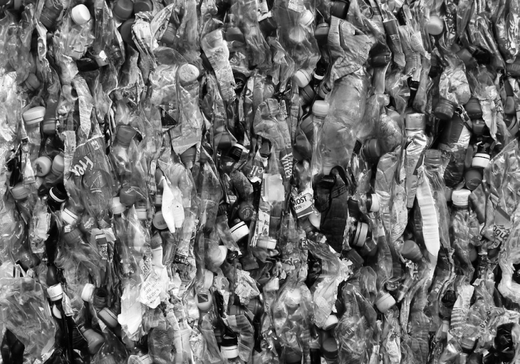

새로운 프로젝트에

플라스틱 환경 오염에 대한 해결 방안은
우리의 실천입니다.
부활피앤피의 의미

수량도 파악할 수 없을 정도로 쏟아지는 플라스틱들,
우리는 플라스틱 시대에 살고 있습니다.
‘부활피앤피’는 버려진 플라스틱을 모아 만든 원료로
제품을 만듭니다.
작은 실천이지만 더 나은 내일을 위해 나아갑니다.
여러분, 실천할 준비 되셨습니까?
R(ecycle). U(pcycle). Ready?